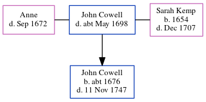

John Cowell - c1698
[ Home ] | [ Calendar ] | [ Surnames Index ] | [ Census Index ] | [ Family History ]A servant, John Cowell was the 7 times great-grandfather of Nigel Horne was married twice - to Anne Sarah Kemp (on Jun 17, 1673 in St. Mildred, Canterbury, Kent, England)1. He had 1 child with Sarah Kemp, John. In 1673, he was living in Canterbury4.
He died c. May 1698 in Margate, Kent, England and was buried there at St John the Baptist Church on May 31, 16982,3.
Children
- John was born c. 1676
Citations
- Film 1736588 Film 1736588
- Familysearch.org (www.familysearch.org)
- Kent, Canterbury Archdeaconry burials 1538-1988 - Findmypast
- England, Select Marriages, 1538–1973 Ancestry.com Operations, Inc.
Media
Kent, East Kent marriage index 1538-1754 Transcription - GBPRS-EASTKENT-MAR-165046-1
Canterbury Marriages - GBPRS/CANT/M/97224788/1
England Marriages 1538-1973 - R_847982004
Canterbury Burials - GBPRS/CANT/D/95156883
Kent, Canterbury Archdeaconry burials 1538-1988 - GBPRS/CANT/D/95554325
England Marriages 1538-1973 - R_847794045
Family Tree
Generated by ged2site. Last updated on Jun 11, 2024